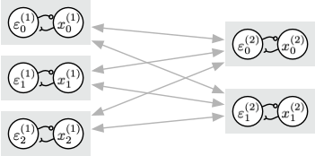

© 2021. All rights reserved.
© 2021. All rights reserved.
 My research aim is to uncover the computational and organizational mechanisms that underlie aspects of the brain. For example, what function does feedback play in our brains, and how do our expectations influence our perceptions? I study these questions by modelling neural networks.
L Wang, J Zheng, J Orchard, “Evolving Generalized Modulatory Learning: Unifying Neuromodulation and Synaptic Plasticity”, IEEE Transactions on Cognitive and Developmental Systems, 12(4):797-808, 2020. (pdf)
N Shaw, T Jackson, J Orchard, “Biological batch normalization: How intrinsic plasticity improves learning in deep neural networks”, PLoS ONE, 15(9):e0238454, Sept 2020.
W Sun, J Orchard, “A Predictive-Coding Network That Is Both Discriminative and Generative”, Neural Computation, 32(10):1836-1862, October 2020. (pdf)
R Cody, B Tolson, J Orchard, “Deep Auto-Encoder for Leak Detection in Water Distribution Systems”, Journal of Computing in Civil Engineering, 34(2):04020001, March 2020.
L Wang, J Orchard, “Investigating the Evolution of a Neural Neuroplasticity Learning Rule”, IEEE Trans. Systems, Man, and Cybernetics - Systems, 49(10):2131-2143, Sept 2019.
HA Leopold, J Orchard, J S Zelek, V Lakshminarayanan, “PixelBNN: Augmenting the PixelCNN with batch normalization and the presentation of a fast architecture for retinal vessel segmentation”, Journal of Imaging, 5(2), article 26 (16 pages), 2019.
D Xu, A Clappison, C Seth, J. Orchard, “Symmetric Predictive Estimator for Biologically Plausible Neural Learning”, IEEE Trans. Neural Networks and Learning Systems, 29(9):4140-4151, Sept 2018.
S Shahir, B Semnani, G Rafi, J Orchard, S Safavi-Naeini, “Millimeter-wave Multi-view Planar Near-field Scattering Tomography System”, IET Microwaves, Antennas and Propagation, 12(6):858-863, 2018.
E Hunsberger, J Orchard, V Reyesos, B Tripp, “Feature-based resource allocation for real-time stereo disparity estimation”, IEEE Access, 5(1):11645-11657, Dec 2017.
L Wang, B Yang, Y Chen, X Zhang, J Orchard, “Improving Neural-Network Classifiers using Nearest Neighbor Partitioning”, IEEE Transactions on Neural Networks and Learning Systems, 28(10):2255-2267, 2017.
L Wang, B Yang, J Orchard, “Particle Swarm Optimization Using Dynamic Tournament Topology”, Applied Soft Computing, 48:584-596, 2016.
J Orchard, “Oscillator-Interference Models of Path Integration Do Not Require Theta Oscillations”, Neural Computation, 27:548-560, March 2015. (pdf)
S Hu, J Orchard, “Medical Image Ensemble Registration Based on Gaussian Mixture Model and Color Component Regularization”, Optik - International Journal for Light and Electron Optics, 126(1), pp. 6-12, Jan 2015.
J Orchard, H Yang, X Ji, “Does the Entorhinal Cortex use the Fourier Transform?”, Frontiers in Computational Neuroscience, vol. 7, article 179 (14 pages), Dec. 2013.
BP Tripp, J Orchard, “Population Coding in Sparsely Connected Networks of Noisy Neurons”, Frontiers in Computational Neuroscience, vol. 6, article 23 (14 pages), May 2012.
J Orchard, H-Y Kim, JTW Yeow, “Plausibility of Image Reconstruction Using a Proposed Flexible and Portable CT Scanner”, The Open Medical Imaging Journal, 6, pp. 1-11, April 2012.
J Orchard, R Mann, “Registering a Multi-Sensor Ensemble of Images”, IEEE Transactions on Image Processing, 19(5):1236-1247, 2010.
Y Wang, J Orchard, “Fast Discrete Orthonormal Stockwell Transform”, SIAM Journal on Scientific Computing, 31(5):4000-4012, 2009.
A Wong, J Orchard, “Robust Multimodal Registration using Local Phase Coherence Representations”, Journal of Signal Processing Systems for Signal, Image, and Video Technology: Special Issue on Biomedical Imaging, 54:89-100, 2009.
M Omanovic, J Orchard, “Exhaustive Matching of Dental X-rays for Human Forensic Identification”, Canadian Society for Forensic Science Journal, 41(3):8 pages, Sept. 2008.
A Wong, J Orchard, “Efficient FFT-Accelerated Approach to Invariant Optical-LIDAR Registration”, IEEE Transactions on Geoscience and Remote Sensing, 46(11):3917-3925, Nov. 2008.
J Orchard, “Multimodal Image Registration using Floating Regressors in the Joint Intensity Scatter Plot”, Medical Image Analysis, 12(4):385-396, August 2008.
J Orchard, “Efficient Least-Squares Multimodal Registration with a Globally Exhaustive Alignment Search”, IEEE Transactions on Imaging Processing, 16(10):2526-2534, October 2007.
J Orchard, C Greif, GH Golub, B Bjornson, MS Atkins, “Simultaneous Registration and Activation Detection for fMRI”, IEEE Transactions on Medical Imaging special issue on Medical Image Registration, 22(11):1427-1435, 2003.
P Torabian, R Pradeep, J Orchard, B Tripp, “Comparison of Foveated Downsampling Techniques in Image Recognition”, Conference on Vision and Intelligent Systems (CVIS), Waterloo, Nov 2020.
J Orchard, W Sun, N Liu, “Why Aren’t All Predictive Coding Networks Generative?”, NeurIPS Workshop on Perception as Generative Reasoning, 6 pages, Vancouver, Dec 2019.
A Anjum, F Sun, L Wang, J Orchard, “A Novel Neural Network-Based Symbolic Regression Method: Neuro-Encoded Expression Programming”, International Conference on Artificial Neural Networks: Deep Learning, LNCS 11728, 373-386, Sept. 2019
T Jackson, J Orchard, “Learning in Energy Networks by Minimizing Network Strain”, Montreal Artificial Intelligence and Neuroscience Conference, 1-page abstract, Dec 2018.
A Khan, J Orchard, “Bidirectional Equilibrium Propagation”, Montreal Artificial Intelligence and Neuroscience Conference, 1-page abstract, Dec 2018. Selected for oral presentation
R Wiyatno, J Orchard, “Style Memory: Making a Classifier Network Generative”, International Conference on Cognitive Informatics and Cognitive Computing, 6 pages, July 2018.
J Orchard, L Castricato, “Combatting Adversarial Inputs using a Predictive-Estimator Network”, International Conference on Neural Information Processing, 7 pages, Nov 2017. Awarded prize for Best Paper
P Wu, J Orchard, “Using Flexible Neural Trees to Seed Backpropagation”, International Conference on Neural Information Processing, 8 pages, Nov 2017.
H Leopold, J Orchard, J Zelek, V Lakshminarayanan, “Segmentation and Feature Extraction of Retinal Vascular Morphology”, SPIE Medical Imaging, February 2017.
H Leopold, J Orchard, J Zelek, V Lakshminarayanan, “Use of Gabor filters and Deep Networks in the Segmentation of Retina Vessel Morphology”, SPIE BiOS, (7 pages), January 2017.
L Wang, J Orchard, B Yang, A Abraham, “Improving Gene Expression Programming using Diversity Preservation Tournament and Its Application in Grid Cell Modeling”, IEEE International Conference on Systems, Man, and Cybernetics, (6 pages), 2016.
J Orchard, L Wang, “The Evolution of a Generalized Neural Learning Rule”, IEEE World Congress on Computational Intelligence (International Joint Conference on Neural Networks), (7 pages), 2016.
H Leopold, J Orchard, V Lakshminarayanan, J Zelek, “A Deep Learning Network for Segmenting Retinal Vessel Morphology”, Proc. of the IEEE Engineering in Medicine and Biology Society Conference, paper 2973 (1 page abstract), 2016.
L Wang, B Yang, J Orchard, “Discovering Grid-Cell Models Through Evolutionary Computation”, IEEE World Congress on Computational Intelligence (IEEE Congress on Evolutionary Computation), (8 pages), 2016.
D Xu, C Seth, J Orchard, “Versatile predictive estimator without weight copying”, Computational and Systems Neuroscience (COSYNE), abstract & poster, 2016.
S Shahir, J Orchard, S Safavi-Naeini, “Towards Five-Dimensional Imaging Using Near-Field Scattering Tomography System”, Annual Biophysical Society Meeting of Canada, 2015.
S Shahir, J Orchard, S Safavi-Naeini, “Monte Carlo based Non-radiating Objective Function Minimization for Permittivity Profile Estimation”, IEEE Antennas and Propagation, 2-page abstract, July 2015.
S Shahir, J Orchard, S Safavi-Naeini, “Scatterer Localization Based on the Non-Radiating Equivalent Source (2D Case)”, IEEE Antennas and Propagation, 2-page abstract, July 2014.
S Shahir, A Taeb, G Rafi, J Orchard, S Safavi-Naeini, “Electromagnetic Inverse Scattering Based Object Imaging and Characterization”, URSI International Union of Radio Science, 1-page abstract, July 2014.
J Orchard, H Yang, X Ji, “Path Integration using the Fourier Transform”, Berstein Conference, abstract & poster, Sept 2013.
S Shahir, M Mohajer, J Orchard, S Safavi-Naeini, “Electromagnetic Inverse Scattering System Characterization based on Green’s Function Analysis”, IEEE Symposium on Antennas and Propagation, 2 pages, July 2013.
J Orchard , H Yang, X Ji, “Navigation by Path Integration and the Fourier Transform: A Spiking-Neuron Model”, Canadian Conference on Artificial Intelligence (AI), LNAI 7884, pp. 138-149, May 2013. (pdf)
X Ji, S Kushagra, J Orchard, “Sensory Updates to Combat Path-Integration Drift”, Canadian Conference on Artificial Intelligence (AI), LNAI 7884, pp. 263-270, May 2013. (pdf)
J Orchard, R Bogacz, “Decision-Making Networks Using Spiking Neurons”, Computational and Systems Neuroscience (COSYNE), abstract & poster, 2013.
M Lam, J Orchard, “Mammalian-like Visual Learning by Spatially Modulating Learning Rate in Deep Belief Networks”, Computational and Systems Neuroscience (COSYNE), 1-page abstract & poster, Feb 2011.
H-Y Kim, J Orchard, “Registering a Non-Rigid Multi-Sensor Ensemble of Images”, IEEE Engineering in Medicine and Biology Conference (EMBC), 4 pages, 2010.
Y Wang, J Orchard, “Use of the Discrete Orthonormal Stockwell Transform for Image Restoration”, IEEE International Conference on Image Processing (ICIP), pp. 2761-2764, 2009.
J Orchard, L Jonchery, “Ensemble Registration: Aligning Many Multisensor Images Simultaneously”, SPIE Electronic Imaging Conference, 12 pages, Jan 2009.
Y Wang, J Orchard, “A New Image Compression Method using the Stockwell Transform”, SPIE Electronic Imaging Conference, 12 pages, Jan 2009.
Y Wang, J Orchard, “Symmetric Discrete Orthonormal Stockwell Transform”, International Conference on Numerical Analysis and Applied Mathematics (ICNAAM), 5 pages, Sept 2008.
J Orchard, JTW Yeow, “Toward a Flexible and Portable CT Scanner”, Medical Image Computing and Computer Assisted Intervention (MICCAI), LNCS 5242, pp. 188-195, Sept 2008.
J Orchard, M Ebrahimi, A Wong, “Efficient Nonlocal-Means Denoising using the SVD”, IEEE International Conference on Image Processing (ICIP’08), 4 pages, 2008.
A Wong, J Orchard, “A Nonlocal-Means Approach to Exemplar-Based Inpainting”, IEEE International Conference on Image Processing (ICIP’08), 4 pages, 2008.
J Orchard, C Kaplan, “Cut-Out Image Mosaics”, Proc. of the 6th Symposium on Non-Photorealistic Animation and Rendering (NPAR), pp. 79-87, June 2008. (one of our images was featured on the cover of the proceedings)
R Sarkar, C de Almeida, N Syed, S Jamal, J Orchard, “Intuitive Interface for the Exploration of Volumetric Datasets”, Proc. of the International Conference on Systems, Computing Sciences and Software Engineering, 6 pages, Dec 2007.
J Orchard, “Globally Optimal Multimodal Rigid Registration: An Analytic Solution Using Edge Information”, IEEE International Conference on Image Processing (ICIP’07), 4 pages, 2007.
J Orchard, A Ramotar, “Autocorrecting Reconstruction for Flexible CT Scanners”, Proc. of IEEE International Symposium on Biomedical Imaging (ISBI’07), pp. 804-807, April 2007.
A Wong, J Orchard, “Efficient and Robust Non-Rigid Least-Squares Rectification of Medical Images”, Proc. of the International Conference on Image Processing and Computer Vision (IPCV’06), pp. 67-73, 2006.
A Wong, W Bishop, J Orchard, “Efficient Multi-Modal Least-Squares Alignment of Medical Images Using Quasi-Orientation Maps”, Proc. of the International Conference on Image Processing and Computer Vision (IPCV’06), pp. 74-80, 2006.
M Omanovic, J Orchard, “Efficient Multimodal Registration using Least-Squares”, Proc. of the International Conference on Image Processing and Computer Vision (IPCV’06), Paper IPC4639, 4 pages, 2006.
A Ramotar, J Orchard, “General Geometry CT Reconstruction”, Proc. of the International Conference on Image Processing and Computer Vision (IPCV’06), pp. 95-99, 2006.
J Orchard, “Efficient Global Weighted Least-Squares Translation Registration in the Frequency Domain”, International Conference on Image Analysis and Recognition (ICIAR’05), LNCS 3656, pp. 116-124, 2005.
J Orchard, “Image Deformation using Velocity Fields: An Exact Solution”, International Conference on Image Analysis and Recognition (ICIAR’05), LNCS 3656, pp. 439-446, 2005.
LM Freire, J Orchard, M Jenkinson, J-F Mangin, “Reducing Activation-related Bias in FMRI Registration”, Proceedings of Medical Imaging and Augmented Reality (MIAR’04), LNCS 3150, pp. 278-285, August 2004.
J Orchard, MS Atkins, “Solving for Motion and Activation Simultaneously in an fMRI Experiment with Multiple Stimulus Conditions”, IEEE International Symposium on Biomedical Imaging, pp. 1000-1004, April 2004.
J Orchard, “Simultaneous Registration and Activation Detection: Overcoming Activation-Induced Registration Errors in Functional MRI”, Ph.D. Thesis, Simon Fraser University, 2003.
J Orchard, MS Atkins, “Iterating Registration and Activation Detection to Overcome Activation Bias in Motion Estimates”, Medical Image Computing and Computer Assisted Intervention 6 (MICCAI), LNCS 2879, pp. 886-893, November 2003.
J Orchard, C Greif, GH Golub, B Bjornson, MS Atkins, “Overcoming Activation-Induced Registration Errors in fMRI”, Proc. of SPIE Conference on Medical Imaging, pp. 130-138, Feb 2003.
MS Atkins, J Orchard, B Law, MK Tory, “Robustness of the Brain Parenchymal Fraction for Measuring Brain Atrophy”, Proc. of SPIE Conference on Medical Imaging, pp. 201-205, Feb 2002.
MS Atkins, K Siu, B Law, J Orchard, WL Rosenbaum, “Difficulties of T1 Brain Image Segmentation”, Proc. of SPIE Conference on Medical Imaging, pp. 1837-1844, Feb 2002.
MS Atkins, J Orchard, MK Tory, “Evaluation of Brain Atrophy Measures”, Proc. of the IEEE Engineering in Medicine and Biology Society Conference, vol. 1, pp. 616-619, Oct 2001.
J Orchard, T Möller, “Accelerated Splatting using a 3D Adjacency Data Structure”, Graphics Interface Conference, pp. 191-200, June 2001.